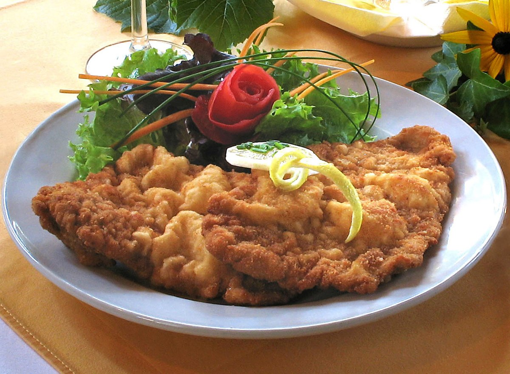

Wiener Schnitzel

Translation of the name: 'Wiener' this word comes from the word 'Wien', which is the Austrian city called Vienna. 'Schnitzel' means basically meat in a crust. I'm German and hope you can understand my English description. Serve the schnitzels with salad, ketchup and French fries.
Ingredients
- 2 pounds veal
- Flour
- Eggs
- Veggie oil
- Breadcrumbs
Directions
- Cut the veal into steaks, about as thick as your finger. Dredge in flour. In a shallow dish, beat the eggs with 1 tablespoon oil, salt and pepper. Coat the veal with egg mixture, then with bread crumbs.
- Heat 1/4 cup oil in a heavy skillet over medium heat. Fry veal until golden brown, about 5 minutes on each side.
Index